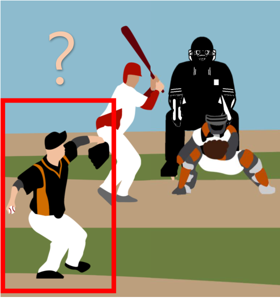

Situation importance from ball–strike count transitions
A measure of the importance of moment for ball-strike counts in a baseball plate appearance

We defined IOM (Importance of Moment) to quantify how much a pitch can change the balance of a plate appearance. The measure weights immediate termination separately from continuation through a ball or strike. We analyzed count-specific importance alongside fastball velocity.
- Method:
- a 14-state Markov model → out probabilities → IOM
- Result:
- rank correlation of 0.90 between IOM and mean velocity
Research problem
A strike at 0 balls and 0 strikes has a different meaning from a strike with 2 strikes already on the count. How favorable the current count is to the pitcher also differs from how important the next pitch is. This study quantifies how much the next pitch can affect the final out or on-base probability within a plate appearance.
In tennis, importance can be defined as the difference in win probability between the two states reached by winning or losing a point. In baseball, a batted ball or hit-by-pitch can end a plate appearance immediately at any count. The difference between the states after a ball and after a strike alone is therefore insufficient. We proposed a measure that also incorporates this termination possibility.
Approach
1. Representing pitch records as state transitions
We processed 2,867,154 pitches and 727,031 plate appearances from MLB Statcast for 2015–2018. The 12 combinations of 0–3 balls and 0–2 strikes, plus the two absorbing states out (O) and on base (R), form a 14-state discrete-time Markov chain. Transition probabilities from each count were estimated from observed frequencies.
Fouls that leave the count unchanged after 2 strikes were excluded from transitions. A model step therefore represents an event that changes the count or plate-appearance outcome, rather than every actual pitch. Reaching out or on base ends the plate appearance.
State transitions and final out/on-base probabilities


2. Calculating the favorability of the current count
We denote the probability of a plate appearance ultimately ending in an out from count s as q(s). Backward calculation weights the next-state out probabilities by their transition probabilities. q is 1 at the out state and 0 at the on-base state.
q(s) = Σ P(next state = s′ | current state = s) × q(s′)
The final out probability was 79.48% at 0 balls and 2 strikes and 28.83% at 3 balls and 0 strikes. These values describe current favorability, which is different from the importance of the next pitch.
3. IOM weights termination and count continuation
If the next event ends the plate appearance in an out or on-base outcome, the difference in out probabilities between those outcomes is 1. If play continues, we use the difference in final out probability between the states after a ball and after a strike. IOM weights the two differences by their respective occurrence probabilities.
IOM(s) = P(immediate termination | s) × 1
+ P(plate appearance continues | s) × |q(after a ball) − q(after a strike)|
For example, at 2 balls and 1 strike, immediate termination has probability 23.9% and continuation 76.1%. After a ball, the out probability at 3 balls and 1 strike is about 41.7%; after a strike, at 2 balls and 2 strikes it is about 70.1%. IOM is about 45.52%. At 3 balls and 2 strikes, the next effective event must end the plate appearance, giving IOM of 100%. Calculations use probabilities before rounding.
Contributions
As co-first author, I participated in proposing a probabilistic measure for interpreting pitch importance despite complex plate-appearance transitions. We distinguished current count favorability from next-pitch importance and analyzed how IOM relates to pitchers’ observed behavior.
Importance varies by count

IOM was 20.39% at 0 balls and 0 strikes, 26.78% at 0 balls and 1 strike, and 87.02% at 0 balls and 2 strikes. Adding a strike does not always produce the same change in importance. Counts with 2 strikes and the full count were particularly important.
IOM and fastball velocity
The Spearman correlation between IOM ranks and mean fastball velocity ranks across 12 counts was 0.90 (p < 0.0001). Mean velocity tended to be higher at more important counts, although the ordering did not match at every count.
IOM and mean velocity across 12 counts
| Count | IOM (%) | Mean velocity |
|---|---|---|
| 3B2S | 100.00 | 92.41 |
| 0B2S | 87.02 | 92.28 |
| 1B2S | 85.70 | 92.19 |
| 2B2S | 81.90 | 92.29 |
| 3B1S | 77.95 | 92.07 |
| 3B0S | 63.33 | 91.86 |
| 2B1S | 45.52 | 91.96 |
| 2B0S | 44.28 | 91.89 |
| 1B1S | 33.45 | 91.79 |
| 1B0S | 31.15 | 91.70 |
| 0B1S | 26.78 | 91.82 |
| 0B0S | 20.39 | 91.79 |
We defined an elite pitcher group as pitchers receiving at least one Cy Young Award vote during 2015–2018. Its IOM–velocity rank correlation was 0.78 (p = 0.0030). The velocity difference from all pitchers increased from 0.27mph at 0 strikes to 0.34mph at 1 strike and 0.49mph at 2 strikes, according to Table 9.
Model validation and interpretive limitations
We tested whether outcomes at the same count differed depending on the preceding count. At 2 balls and 1 strike and at 2 balls and 2 strikes, final out rates differed by path by 0.78 and 0.50 percentage points, respectively. Path independence therefore did not hold completely. Model out probabilities were generally close to observed outcome rates, but this approximation must be considered.
The velocity analysis describes associations in count-level aggregates. It does not establish that importance causes higher velocity or that a particular pitching strategy is effective. Elite pitcher selection may favor starters, and fastball velocity alone cannot assess overall pitch quality. Comparing pitcher roles and analyzing breaking-ball spin and trajectories are directions for future research.